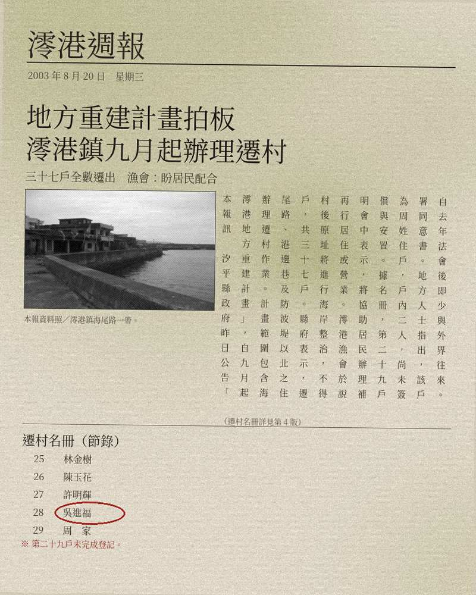

澪港週報 2003/08/12 第二版（張貼於漁會門口）
公告事項：
一、因應「地方重建計畫」，本鎮自民國九十二年九月一日起辦理遷村。
二、補償辦法依縣府九十一年度核定標準辦理，詳細內容請洽遷村服務站。
三、逾期未辦理遷出登記者，視同放棄地上物補償。
四、本會自八月二十日起停止會務，會員資料移交汐平縣政府民政課。
公告日期：2003/08/12 張貼人：總幹事 許萬得
（公告右下角有紅筆寫的「29」，字跡與公告不同。）
相關：遷村名冊